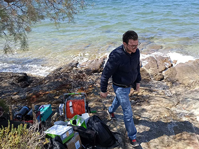
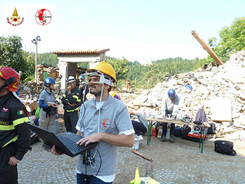
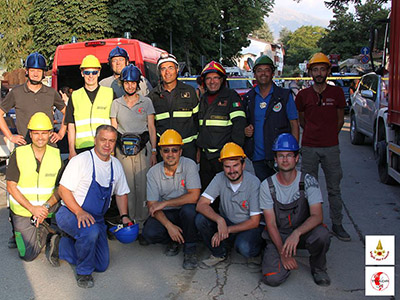
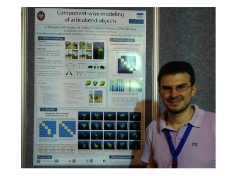

Valsamis (Makis) Ntouskos
MSCA Research Fellow
School of Rural, Surveying and Geoinformatics Engineering
National Technical University of Athens
Remote Sensing Lab
Gallery
- "RAMONES field tests at Milos"
- "The Gaze Machine at Amatrice"
- "TRADR Team at Amatrice"
- "ICCV 2015"